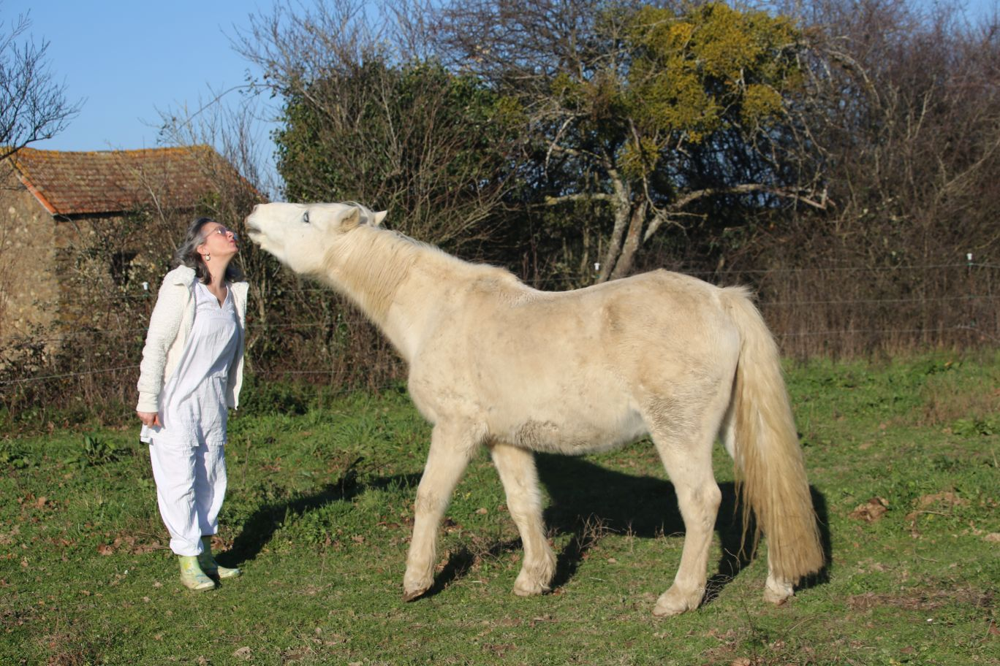
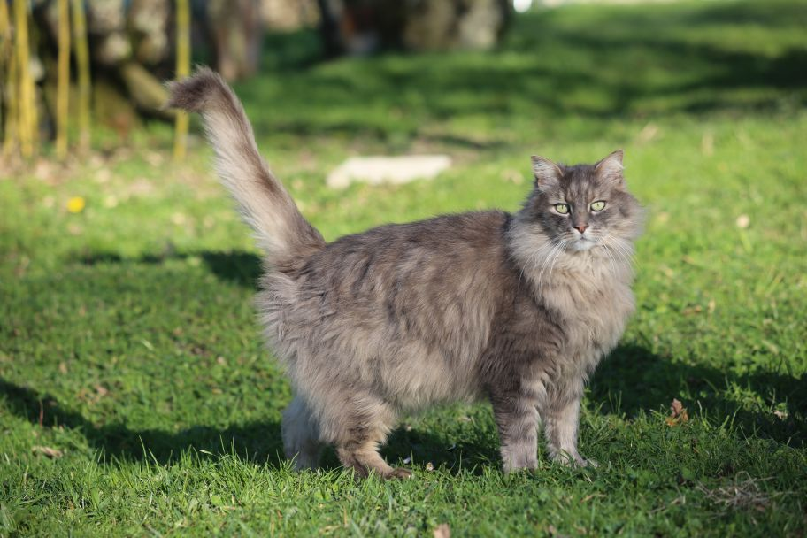
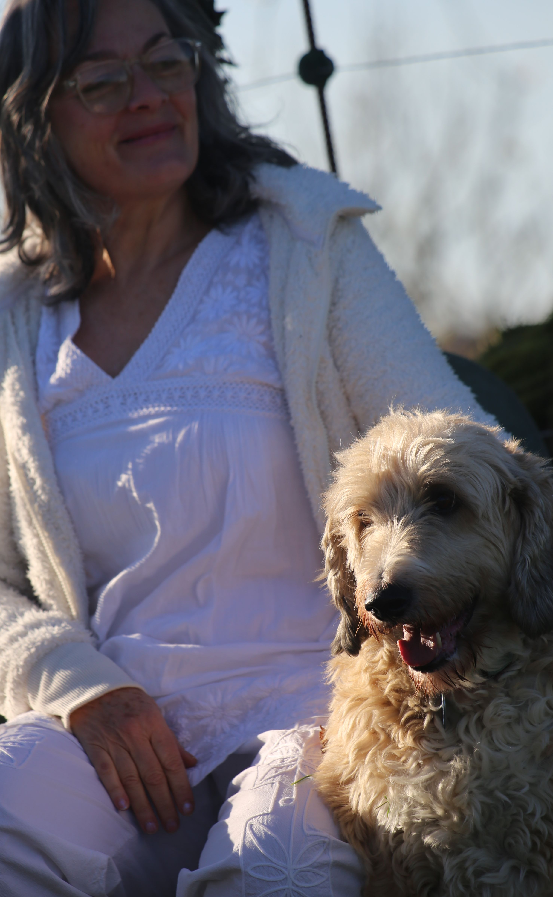
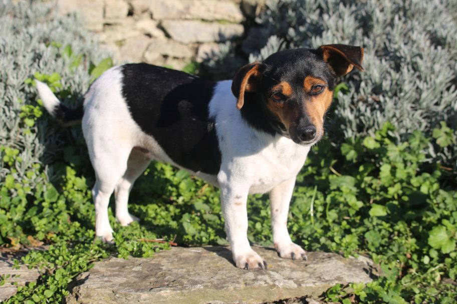

Communication animale

Depuis mon plus jeune âge, je suis en amour des animaux.
Ils ont toujours été une partie essentielle de ma vie, ce sont des maîtres d’amour et de sagesse. La communication animale est un magnifique art de connexion, un partage subtil qui permet de comprendre les émotions et les besoins de nos compagnons, afin d’harmoniser la relation.
Chaque séance se fait à distance, avec une photo de votre animal, après un premier dialogue avec le ou la responsable. La communication n’est pas un échange verbal, mais un partage sensoriel : images, sons, goûts, sensations et ressentis se mêlent.
Les soins incluent le soutien aux animaux malades, la gestion de peurs, de dépressions, d’anxiété de séparation, de stress, d’agressivité, ainsi que la préparation aux changements, la compréhension de nos animaux ou l’accompagnement lors de conflits entre animaux.


Je précise avec rigueur que je ne remplace en aucun cas un vétérinaire.
Je reçois simplement le ressenti de l’animal, sans poser de diagnostic ni proposer de solution médicale. Je suis un pont de compréhension, pas une solution magique.
Le soutien aux animaux malades est réalisé uniquement si l’animal est déjà pris en charge par un vétérinaire.
La communication animale est réalisée à la demande du responsable de l’animal. Lors de ces échanges, l’animal m’autorise à entrer dans son espace intime, ainsi que dans celui de son responsable. Je m’engage à ne porter aucun jugement sur les informations reçues et à respecter pleinement leur contenu.
Confidentialité
Toutes les informations personnelles recueillies dans le cadre des communications ou des échanges avec les responsables d’animaux sont strictement confidentielles.
Les données personnelles (coordonnées, e-mail, etc.) sont utilisées uniquement dans le cadre de l’activité professionnelle et ne seront en aucun cas transmises à des tiers.
Les tarifs :
Communication libre — 75 euros pour 1 séance.
Communication sans questions pour ne pas influencer l’animal. Les messages, problématiques et pistes de solutions émergent librement de lui.
Préparer l’animal à un changement — 90 euros pour 3 séances.
Une première communication permet d’évaluer son état. Ensuite, je l’accompagne en lui transmettant des images pour le préparer aux changements (déménagement, séparation, voyage…). Le nombre de séances s’adapte selon les besoins.
Problème de comportement — 90 euros pour 3 séances.
J’identifie les causes du comportement (stress, peur, agressivité, apathie, hyper-attachement…). Puis je travaille avec l’animal pour apaiser et réorienter ce comportement. Des conseils peuvent être proposés pour un accompagnement au quotidien.
Conflit entre 2 animaux — 90 euros pour 3 séances.
Une première communication permet de comprendre l’origine du conflit. Je travaille ensuite avec les deux animaux pour rétablir l’harmonie. Des recommandations sont partagées pour maintenir l’équilibre.
Soutien animaux malades — 90 euros pour 3 jours consécutifs.
Après une évaluation de l’état de l’animal, un protocole à distance est réalisé sur 3 jours, avec un suivi quotidien. Intervention uniquement en complément d’un suivi vétérinaire.
Contact :
Téléphone : 06 72 87 91 29
Email : isabelle.escolano@wanadoo.fr
